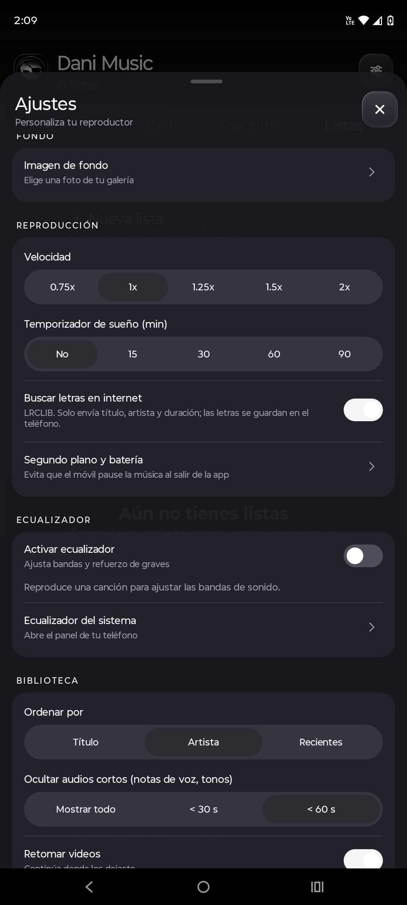

📸 Capturas de pantalla



Tu música. Tu espacio. Sin límites.
⬇ Descargar aplicaciónDisponible para Android · APK
Dani – Música Local es un proyecto Android dedicado a disfrutar de la música almacenada directamente en tu dispositivo.
